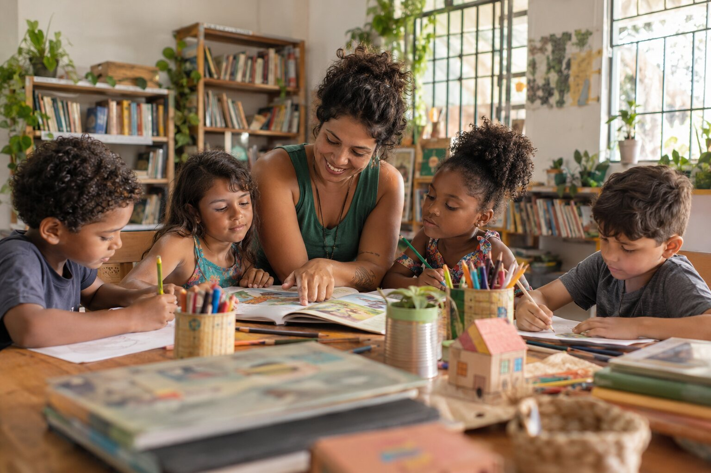

Educação e cultura
Raízes do Saber
Encontros semanais de leitura, apoio escolar, arte e inclusão digital para crianças e adolescentes. As atividades são conduzidas por educadores e voluntários da comunidade.
- Atendimento gratuito no contraturno
- Biblioteca comunitária compartilhada
- Oficinas com famílias e responsáveis